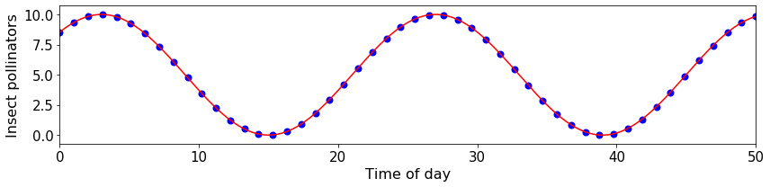

from IPython.display import Image
Image("pollinators.png")

import numpy as np
import pandas as pd
import matplotlib.pyplot as plt
#xt=np.linspace(0,15*np.pi,num=500)
xt=np.linspace(0,50,num=50)
##
fig, ax = plt.subplots(figsize=(12, 3))
x=np.linspace(0,50,num=1000)
y = 5 + 5*np.cos((np.pi/12)*(x-3))
ax.plot(x,y, color='r')
ax.scatter(xt, data, color='b', lw=2)
ax.tick_params(axis='both', labelsize= 15)
ax.set_xlabel('Time of day', fontsize = 16)
ax.set_ylabel('Insect pollinators', fontsize = 16)
ax.set_xlim(0,50)
#ax.set_ylim(-1,15)
fig.tight_layout()

data
array([8.53553391e+00, 8.95862126e+00, 9.31670817e+00, 9.60391484e+00,
9.81552536e+00, 9.94806509e+00, 9.99935773e+00, 9.96856105e+00,
9.85618073e+00, 9.66406207e+00, 9.39535963e+00, 9.05448551e+00,
8.64703685e+00, 8.17970394e+00, 7.66016038e+00, 7.09693707e+00,
6.49928210e+00, 5.87700896e+00, 5.24033537e+00, 4.59971547e+00,
3.96566823e+00, 3.34860469e+00, 2.75865702e+00, 2.20551213e+00,
1.69825266e+00, 1.24520779e+00, 8.53816507e-01, 5.30505439e-01,
2.80583348e-01, 1.08153949e-01, 1.60485263e-02, 5.77944902e-03,
7.75153352e-02, 2.30078283e-01, 4.60963214e-01, 7.66379004e-01,
1.14131073e+00, 1.57960203e+00, 2.07405617e+00, 2.61655423e+00,
3.19818840e+00, 3.80940827e+00, 4.44017762e+00, 5.08013924e+00,
5.71878497e+00, 6.34562828e+00, 6.95037640e+00, 7.52309940e+00,
8.05439318e+00, 8.53553391e+00])